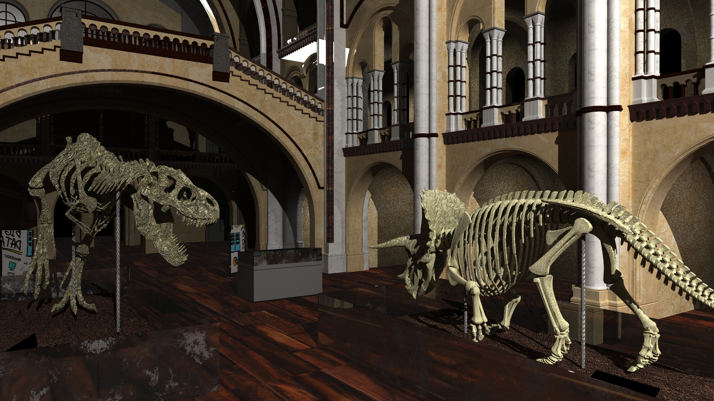
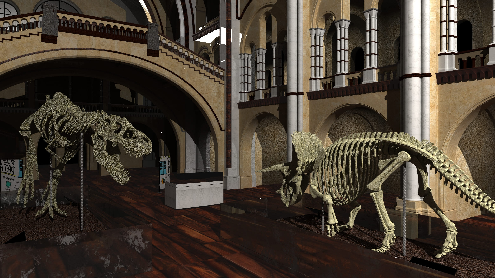
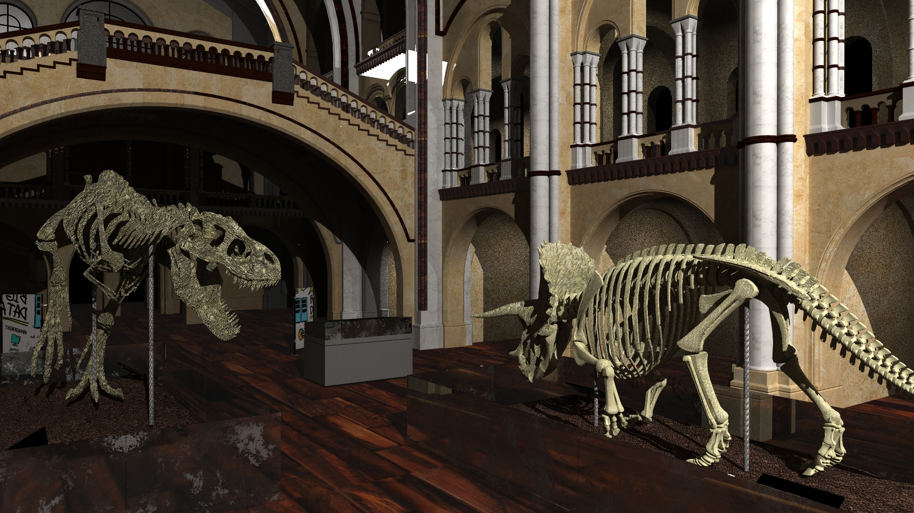
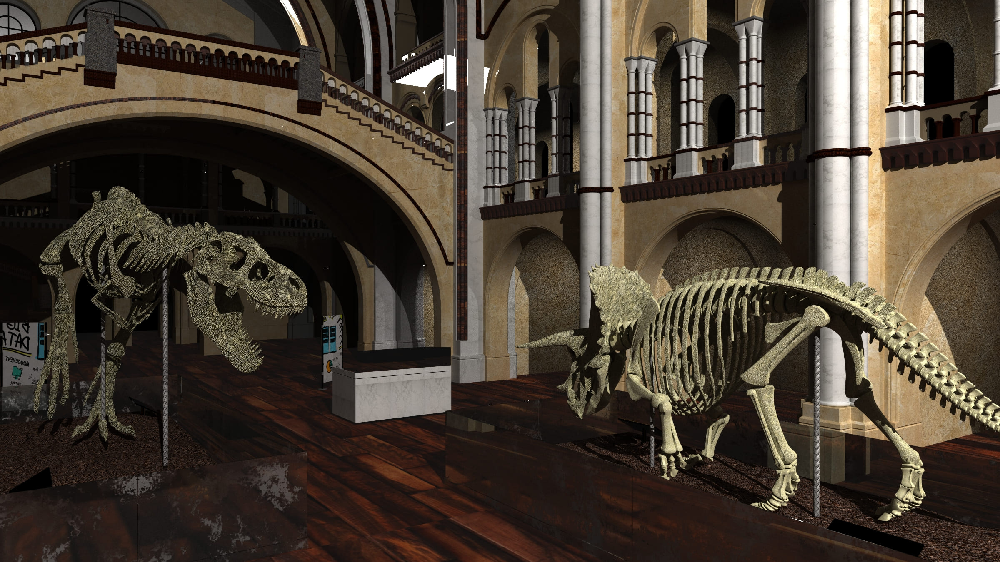

Museo
En este proyecto se realizó la texturización e iluminación de una escena 3D. Se texturizo con imagenes extraídas de internet, con las cuales tambien se sacó los mapas de relieve. Se renderizó con el motor grafico "Arnold" para conseguir un buen resultado con la iluminacion. A continuación se presentan los primeros renders que se realizaron.


Anteriormente se mostró diferentes perspectivas especialmente de cerca de varios objetos en la escena. A continuación presento las diferentes configuracioens de luz que se realizo hasta dar con el render final.
 


